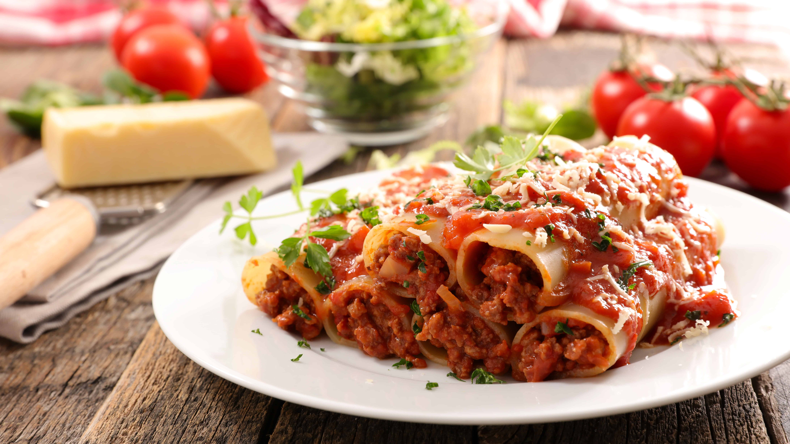

My Cannellonis a la Bolognesa Recipe!

What are cannellonis?
This Cannellonis a la Bolognesa recipe, also known as Beef Cannelloni, features tubes of pasta stuffed with a
savory
ground beef mixture, layered between rich red and creamy béchamel sauces, then topped with melted mozzarella. It's a
hearty, comforting meal that perfectly blends the robust flavors of a traditional Italian dish.
Kitchen items you'll need
Ingredients we'll use
Red Sauce
- 2 tablespoons of olive oil
- 1 yellow onion finely chopped
- 2 cloves of garlic minced
- ⅓ cup of white or rosé whine
- 14 ounces of canned peeled tomatoes
- ½ a cup of water
- ½ teaspoon of salt
- 2 teaspoons sugar
- A pinch of black pepper
- 1 bay leaf
- 1 teaspoon dried oregano